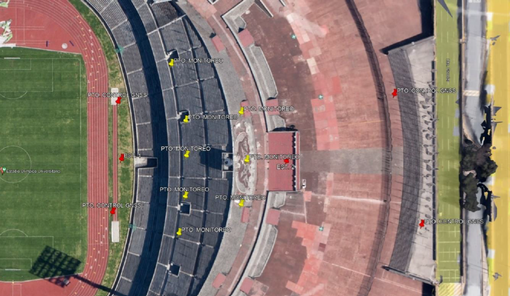
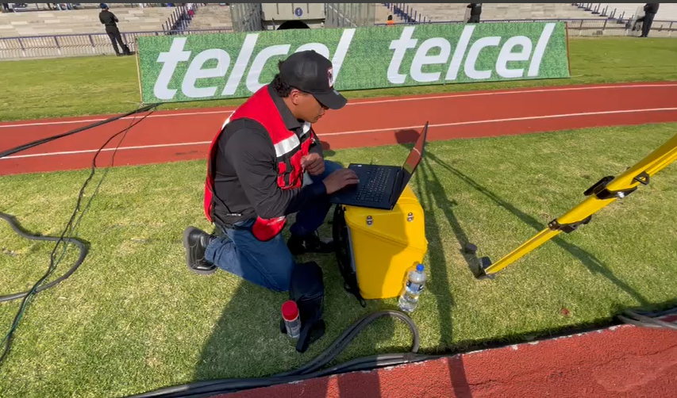
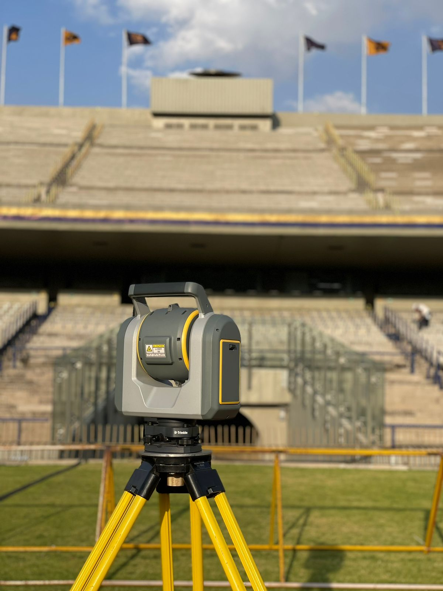

Metodología
Nuestro enfoque se divide en varias etapas, las cuales Implican 3 visitas al Estadio:
- Inspección Visual: En esta fase inicial, realizaremos una inspección detallada del estadio para identificar posibles áreas de interés y establecer puntos clave para el monitoreo.
- Colocación de Puntos y Monitoreo sin Público: Utilizando estaciones totales y equipos GNSS, colocaremos puntos de monitoreo estratégicos en el estadio y realizaremos mediciones en condiciones sin público para establecer una línea base.
- Monitoreo con Estadio Lleno: Durante un evento deportivo durante(el juego entre Pumas y León del 14/04/24), llevamos a cabo un monitoreo estático en tiempo real para evaluar posibles deformaciones o desplazamientos bajo carga.
Primer Visita: Inspección
La primera visita al estadio se llevó a cabo con el propósito de planificar y organizar las futuras mediciones, durante esta visita:
- Inspección del Estadio: Se recorrió el estadio para identificar las ubicaciones estratégicas donde se colocarían los equipos de medición. Se seleccionaron puntos clave tanto en el campo como en las gradas.
La instalación de el GNSS es con la finalidad de colocar una línea base dentro del estadio, a nivel de cancha para que no sea afectado por el movimiento de las gradas, pues con ella se orientaría la estación robótica para obtener coordenadas en cada serie de medición.
Segunda Visita: Pumas vs León (cierre de liguilla)
Se realizó durante un evento deportivo con la presencia de público el día 14 de Abril del 2024:
- Instalación de la Estación Robótica y Calibración Inicial: La estación robótica se colocó en una posición estratégica con buena visibilidad de los puntos de control, asegurando estabilidad. Luego se verificaron las coordenadas de los puntos de control mediante mediciones preliminares y conexión con puntos base usando la línea base GNSS.
Tercer Visita: Sin público
Se coordinó un día sádabdo y al final de la temporada de futbol mx para tenerlo vació:
- Medicion con la SX12: e realizó una única serie de mediciones utilizando la estación robótica para obtener datos de referencia en el estadio vacío. Esta serie de mediciones sirvió para comparar y validar los datos obtenidos durante el evento con espectadores, asegurando así la precisión y confiabilidad de los resultados.